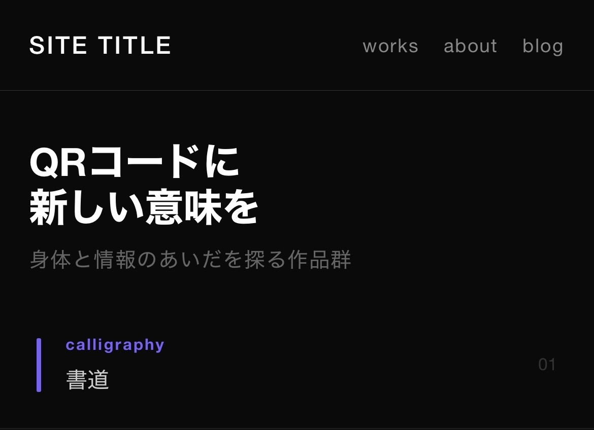

作品のためにウェブサイトを開設した。このサイト自体も制作の一部であり、完成に向けて更新されていく記録の場になる。
この作品では、QRコードをメインのモチーフとして扱うことに決めた。
大学の講義中、スライドにQRコードが映し出された。数十人の学生が一斉にスマートフォンを取り出し、手元の画面を見ながら授業を受けている。同じ教室にいるのに、全員が違う方向を向いていた。その光景が妙に頭に残った。

QRコードは、身体から切り離された情報の極点にあると思う。楔形文字も楽譜も数式も、専門知識がなければ読めない記号だ。しかしQRコードは、人間が直接解読できない、機械だけが読める記号という点で特殊だ。スキャンされた瞬間に役割を終え、黒と白の格子だけが残る。ある意味で、虚無の記号と言えるかもしれない。
この作品は、そのQRコードにあえて人間的な文脈を付与することを試みる。機械のための記号を、手で作り、実際に触れることで、新しいQRコードの可能性を提案する。
具体的にはいくつかの小作品を制作する予定だ。筆で書くことで機械的な意味とアナログの筆触を共存させる試み、手描きの反復作業を通じて思い入れや没入を生む試み、そして情報の寿命と物体の寿命を一致させる試み——食べ終わったら不要になる情報を載せたQRコードを、食べることで消滅させる、といったものだ。
個々の作品の詳細は、制作しながらこのブログで都度記録していくことにする。この記録自体も、最終的にはウェブサイトの一部として公開される予定だ。